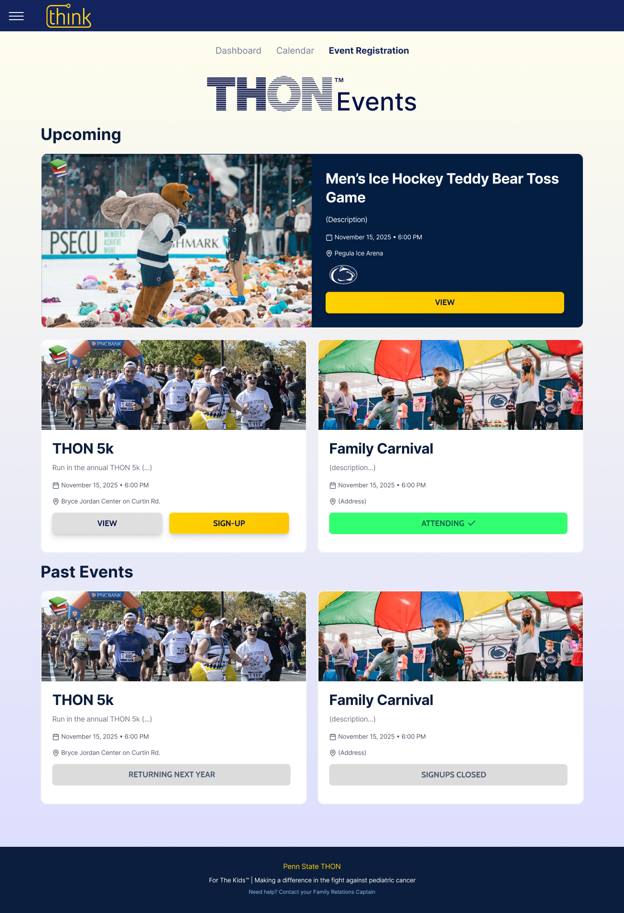

Overview
Why THON asked for a redesign
The Family Relations Director asked THON Technology to rethink how families receive updates, complete onboarding, and stay connected throughout the year.
Product context
The portal helps THON families complete onboarding, update information, and keep track of events.
UX focus
Families needed a calmer place to understand what mattered now, not another dense update channel.
Design outcome
The redesign prioritizes event planning, clearer next steps, and a warmer connection to THON.
Problem
Families had to work too hard to find what mattered.
The portal and weekly updates contained useful information, but the experience did not consistently organize that information around family decisions.
Find the action
Updating information, registering for events, and managing THON Weekend details needed to feel like a clear path, not disconnected tasks.
Understand events
Families needed to quickly scan event type, timing, relevance, and next steps without relying on long weekly updates.
Feel connected
The interface needed to feel like a community touchpoint, not just a place to submit sensitive family information.
Research findings
What Family Relations Chairs told us
Aiden Coleman and I interviewed 5 Family Relations Chairs from partner organizations. We couldn't interview THON families directly for privacy reasons, so we went to the people who support them every week. We asked what families ask for, where confusion happens, and how paired organizations build relationships with new families.
Families need a clear next step
Information is most helpful when it is tied to a visible action, deadline, or event.
Connection starts before the first meeting
Optional family interests and hobbies could help paired organizations break the ice with care.
Concise beats comprehensive
The portal needed to summarize the weekly email experience, not recreate its density.
Before and after
The calendar moved from a small preview to a real planning tool.
The old dashboard included a small calendar preview, but it was secondary to other tasks and did not give families enough control over event planning. I reframed the calendar as its own destination, then added an events page to make discovery and sign-ups easier.
Before
The only page families saw was a data entry form.

- No welcome or context: the page opened directly on a data form, giving families no sense of where they were or what the portal was for.
- Clinical tone: "Treatment Status" and bare field labels made the portal feel like an admin tool, not a touchpoint built for families navigating a difficult time.
- No path forward: once a family submitted their info, there was nowhere obvious to go: no events, no calendar, no upcoming actions visible anywhere.
After · Dashboard
A home base that orients families before they do anything.

- Three clear actions, nothing buried: Update Family, THON 2026 Involvement Registrations, and Family THON Pass Registrations are each surfaced as their own card so families know exactly what to do without hunting.
- Community imagery up front: real THON photography appears before a family clicks anything, grounding the portal in the event experience rather than paperwork.
- Calendar preview inline: the family events calendar is visible directly from the dashboard, reducing dependence on weekly email digests to stay aware of upcoming dates.
After · Events
Event discovery designed as an experience, not a list.

- Photo-rich event cards: each event leads with real imagery from THON activities, making the page feel like a community space rather than a spreadsheet of dates.
- Contextual CTAs per event: families see VIEW, SIGN-UP, or ATTENDING depending on their status, so every card has an obvious next action rather than requiring navigation elsewhere.
- Upcoming vs. past separated clearly: the page distinguishes what's actionable now from what has passed, so families are never unsure whether a deadline is still open.
After · Calendar
All event types layered into one shared calendar.

- Three event categories, color coded: THON Wide, Org Related, and Personal events each get a distinct color and a toggleable visibility control, letting families filter down to what's relevant to them.
- Click to expand event detail: selecting a date opens an inline detail card with the event name, date range, and quick context, with no new page required to check what something is.
- Families can add personal events: the "Add New Event" button lets families layer in their own dates alongside THON events, making the calendar a genuine planning tool rather than a read-only feed.
Design decisions
Four decisions shaped the redesign
Separate the task from the journey
Updating family info is a task. Staying connected to THON is the journey. The redesign gives each its own space so neither crowds the other out.
Surface actions, not fields
Every page leads with what a family can do (register, view, update, or add) rather than presenting information and expecting families to figure out the next step.
Let the community speak
Photography from real THON events replaces blank form space, making the portal feel like an entry point into the THON world, not a bureaucratic requirement.
Build in relationship starters
Optional interests and hobbies fields give paired organizations something personal to work with when reaching out to families for the first time.
What this shows
What this project taught me
The portal's practical job is registrations and updates. Its emotional job is making families feel remembered inside a huge organization, and the redesign had to do both at once. It also taught me a research lesson: when you can't reach your users directly, the people who support them every week are the next-best source of truth. The concept was handed off to the incoming design team when I graduated and hasn't shipped yet.